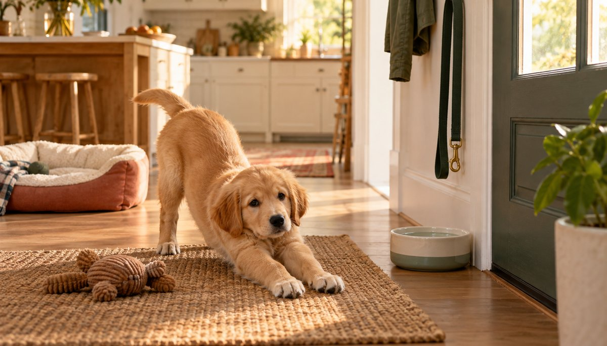

A Realistic Daily Schedule for a New Puppy

A useful puppy schedule is not a military timetable. It is a repeating sequence: potty, food or activity, potty again, then rest. Once you understand that loop, you can move the clock times around your household without losing the structure that helps a puppy settle in.
Researched by the CanMyPet Editorial Team · Published September 27, 2026 · Updated October 8, 2026 · Checked against the sources listed below.
Sample schedule for a young puppy
This example suits a household where someone is available during the day. Shift the times, but preserve the sequence.
The four anchors that matter most
1. Potty after every transition
“After” is easier to remember than an hourly alarm: after waking, after meals, after drinking, after play and after time in a crate or pen. Watch for sudden sniffing, circling, wandering away or stopping play. Accidents are information — they usually mean the interval was too long or a signal was missed.
2. Several short activity windows
Use brief play, sniffing and training sessions rather than trying to exhaust a puppy in one long block. Teach one tiny skill, stop while it is going well, and let the puppy rest. An overtired puppy often looks more chaotic, not more sleepy.
3. Predictable meals and fresh water
Follow the feeding amount and frequency recommended for the puppy's food and individual needs. The schedule should make meals predictable; it should not restrict normal access to fresh water. Ask your veterinarian if you are unsure about feeding frequency or growth.
4. Protected naps
Put rest on the calendar. A quiet sleep area prevents every family member from restarting play when the puppy is already tired. Children should know that a sleeping puppy is left alone.
What if everyone works outside the home?
A schedule cannot give a young puppy adult bladder control. Arrange a trusted person, sitter or walker to provide breaks appropriate to the puppy. If the absence is longer than the puppy can manage, discuss a safe pen setup and toileting plan with a qualified trainer. Do not rely on an all-day crate.
A practical workday plan might divide responsibility: one person handles the early routine, a midday helper covers potty and lunch, and the household protects an evening play-and-training window. Put the plan on the refrigerator so “I thought you did it” never becomes the puppy's problem.
How the schedule changes over time
As bladder control, confidence and attention grow, potty intervals can gradually lengthen, lunch may eventually disappear under the puppy's feeding plan, and activity windows can expand. Change one part at a time. If accidents return, shorten the interval again rather than treating it as defiance.
How the loop changes by age
The same potty-food-play-rest loop applies from the first week home to adolescence; what changes is how long each stretch lasts. Use this table as a starting point, then follow your veterinarian's advice for your puppy's size, breed and health.
| Age | Meals (typical) | Awake windows | Potty rhythm |
|---|---|---|---|
| 8–12 weeks | Usually 3–4 small meals a day | Often only 30–60 minutes at a time, then back to sleep | After every wake-up, meal, drink and play burst — expect a trip every 1–2 hours while awake, plus a night trip |
| 3–6 months | Often 3 meals, moving toward 2 | Longer, but still punctuated by naps | Intervals stretch gradually; the “after” triggers stay the same |
| 6–12 months | Commonly 2 meals a day | Adolescent energy: more exercise and mental work needed | Reliable on a schedule, but regressions happen during growth spurts, moves and routine changes |
A commonly cited rule of thumb is that a puppy can hold their bladder for about one hour per month of age, plus one. Treat it as a ceiling for a calm, resting puppy — not a target. Excited, freshly woken or recently fed puppies need to go much sooner. Our dog feeding calculator can help you size meals, and the puppy weight predictor gives a rough idea of where growth is heading.
A work-day version of the schedule
If the household is away part of the day, the schedule below puts the long gap in the middle and hands the puppy to a helper (a family member, sitter or walker). Adjust the times to your commute, and keep the first stretch alone very short while your puppy is new to the home.
If your workday is longer than your puppy can reasonably manage, that is a signal to add helpers, not to hope. The ASPCA and AKC both stress that young puppies need frequent breaks and company; the time a dog needs guide covers what adult dogs can handle, and the crate size calculator helps you set up a pen or crate that fits your puppy as they grow.
Night time: the first weeks
Most very young puppies cannot sleep through the night yet. Plan for one or two quiet trips, keep them boring (no play, minimal light, calm voice) and go straight back to bed. Put the sleep area within earshot at first so you can hear if your puppy wakes and needs to go. Over several weeks, the gap usually lengthens. A short wind-down routine — last potty, a safe chew, then lights low — teaches your puppy that the evening is for settling.
Training and socialization windows
Short sessions fit the schedule best: two to five minutes before meals, when your puppy is motivated and not yet sleepy. Good first skills include name response, “sit,” walking beside you indoors and settling on a mat. For socialization, the American Veterinary Society of Animal Behavior notes that the early weeks are a sensitive period and that carefully managed exposure to new people, sounds and surfaces — in clean, low-risk settings — is important even before the vaccine series is complete. Ask your vet which places are safe for your puppy and check the vaccine schedule for typical timing. Pair new experiences with good things, and end sessions before your puppy gets overwhelmed — see our dog body language guide for signs of stress.
Treats and chews that fit the schedule
Tiny, soft rewards keep training fast and meals balanced. Plain cooked chicken, small pieces of carrot, a few blueberries, green beans and a spoonful of plain pumpkin are widely used examples; keep treats to a small share of daily calories (veterinary groups commonly cite no more than about 10%) and cut them pea-sized for small puppies. Peanut butter is fine only if the label does not list xylitol, which is highly toxic to dogs. When in doubt, check the food checker before sharing anything from your plate.
Fall and Halloween: keeping the routine steady
- Dark evenings: earlier sunsets mean more potty trips in the dark — use a leash, a headlamp and a reflective collar or tag.
- Wet-weather potty trips: pick a sheltered spot near the door and use the same cue word; a puppy that dislikes rain still needs to go.
- Halloween: keep the candy bowl out of reach — chocolate and sugar-free sweets containing xylitol are dangerous. Doorbell traffic can unsettle a young puppy, so put them in a quiet room with a chew and a white-noise machine.
- Fallen debris: mushrooms, moldy leaves and acorns on walks can make dogs sick; steer your puppy away and see foods toxic to dogs. If something is swallowed, use the emergency guide and call your vet or a poison hotline.
Troubleshooting the schedule
| Problem | Likely cause | Try this |
|---|---|---|
| Accidents shortly after a potty trip | Not finished, or distracted outside | Wait a few more minutes, stay boring and quiet, then reward success right away |
| Frantic “zoomies” in the evening | Overtired puppy | Move to a calm space with a chew and offer a nap |
| Cries when you leave the room | Normal adjustment to being apart | Practise very short separations with a chew, then slowly extend them |
| Wakes early every morning | Schedule or light conditions | Keep morning trips calm and boring; shift bedtime and the first meal gently, not suddenly |
| Regression at 4–6 months | Growth, teething, changes at home | Go back to a closer potty rhythm for a few days, then stretch it again |
Frequently asked questions
Does every puppy need the same schedule?
No. Age, size, feeding plan, household and individual development all matter. Keep the sequence consistent and adjust the clock.
How long should puppy training sessions be?
Very short sessions are usually more productive. Try a few minutes, repeat later and finish while the puppy is still engaged.
Should I wake a sleeping puppy to stay on schedule?
Usually the schedule should protect sleep, not interrupt it. Be ready for a potty trip as soon as the puppy wakes.
How many hours does a puppy sleep?
Young puppies commonly sleep a large share of the day — the AKC cites ranges of roughly 16–20 hours — so a quiet, protected nap spot is part of the schedule, not an extra.
When can a puppy sleep through the night?
It varies. Many puppies need at least one night trip at first and gradually go longer over several weeks. Ask your vet if your puppy is still waking often at a few months old.
Is it okay to use a crate or pen on this schedule?
Many trainers use one for short rests and overnight, with plenty of breaks and exercise. A crate should be comfortable and the right size, and never a place for long daytime stretches for a young puppy.
How often should I feed my puppy?
Young puppies often eat three to four times a day, moving to fewer meals as they grow. Follow the food label and your vet's advice for your puppy's size and breed.
What should I do if my puppy has an accident?
Clean it with an enzymatic cleaner, avoid scolding, and shorten the time between potty trips. Accidents tell you the interval was too long or a signal was missed.
Sources
- AKC — Setting schedules and developing a routine (updated October 2025)
- AKC — How to potty train a puppy
- AKC — How much do puppies sleep?
- AVSAB — Position statements (puppy socialization)
- ASPCA — Dog care
- AAHA — Canine life stage and nutrition resources
For information only — not veterinary advice. Ask your veterinarian or a qualified trainer about your puppy's individual needs.